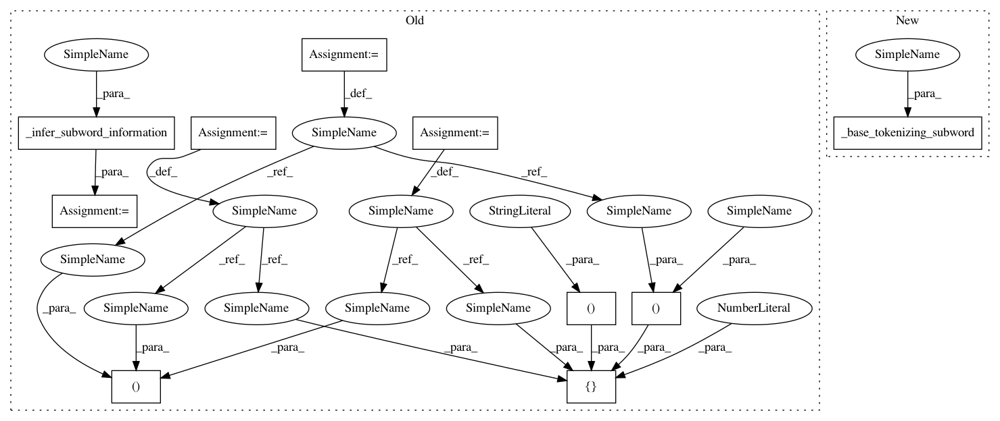

e61155f753e13154a8d4f89f876bf06ed02989fd,soynlp/pos/_lrtagger.py,LRMaxScoreTagger,_add_last_subword,#LRMaxScoreTagger#Any#Any#Any#,257
Before Change
def _add_last_subword(self, t, words, n):
b = words[-1][3]
subword = t[b:]
(pos, prop, count) = self._infer_subword_information(subword)
return [[(subword, pos), ("", None), b, n, n-b, prop, count, 0.0]]
def _add_first_subword(self, t, words):
e = words[0][2]
After Change
subword = t[b:]
//(pos, prop, count) = self._infer_subword_information(subword)
//return [[(subword, pos), ("", None), b, n, n-b, prop, count, 0.0]]
return self._base_tokenizing_subword(subword, b)
def _add_first_subword(self, t, words):
e = words[0][2]
subword = t[0:e]
In pattern: SUPERPATTERN
Frequency: 3
Non-data size: 10
Instances
Project Name: lovit/soynlp
Commit Name: e61155f753e13154a8d4f89f876bf06ed02989fd
Time: 2017-09-08
Author: soy.lovit@gmail.com
File Name: soynlp/pos/_lrtagger.py
Class Name: LRMaxScoreTagger
Method Name: _add_last_subword
Project Name: lovit/soynlp
Commit Name: e61155f753e13154a8d4f89f876bf06ed02989fd
Time: 2017-09-08
Author: soy.lovit@gmail.com
File Name: soynlp/pos/_lrtagger.py
Class Name: LRMaxScoreTagger
Method Name: _add_last_subword
Project Name: lovit/soynlp
Commit Name: e61155f753e13154a8d4f89f876bf06ed02989fd
Time: 2017-09-08
Author: soy.lovit@gmail.com
File Name: soynlp/pos/_lrtagger.py
Class Name: LRMaxScoreTagger
Method Name: _add_inter_subwords
Project Name: lovit/soynlp
Commit Name: e61155f753e13154a8d4f89f876bf06ed02989fd
Time: 2017-09-08
Author: soy.lovit@gmail.com
File Name: soynlp/pos/_lrtagger.py
Class Name: LRMaxScoreTagger
Method Name: _add_first_subword